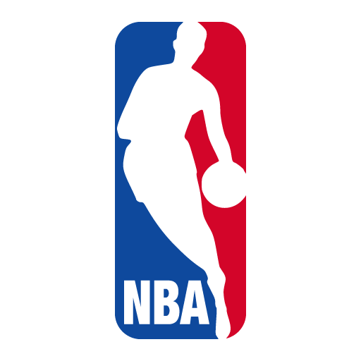

DESTAQUE
NBA anuncia mudanças nas regras para próxima temporada
A liga norte-americana anunciou hoje uma série de mudanças nas regras que visam aumentar o ritmo do jogo e reduzir paradas. Entre as principais alterações está a redução do número de tempos técnicos por partida.
As novas regras incluem também mudanças nas faltas ofensivas, permitindo mais fluidez no ataque. Os técnicos terão menos desafios por jogo, e a liga está testando um novo sistema de replay automatizado para certas situações.
A implementação começará na pré-temporada e os jogadores já se manifestaram sobre as mudanças, com opiniões divididas no vestiário.